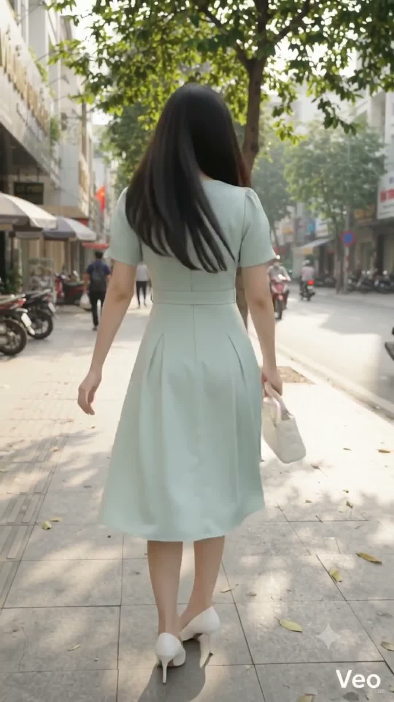
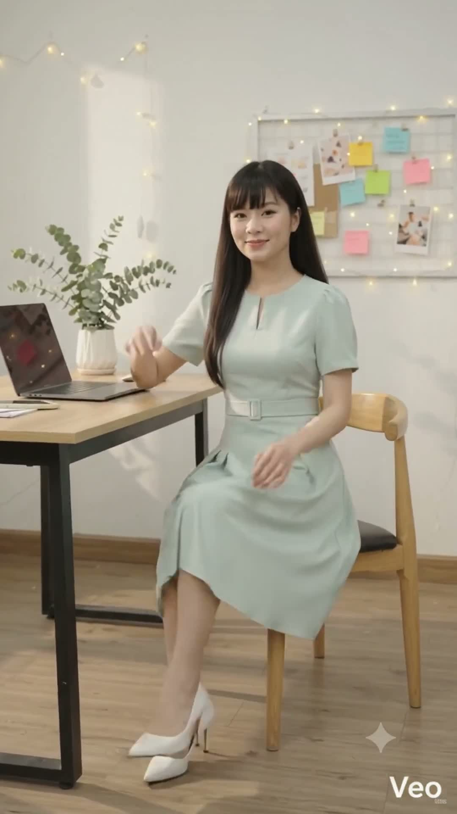

Đầm công sở Nhật Vy D2985 Xanh Ngọc: đi làm nhẹ nhàng mà vẫn nổi bật
Sáng nay đi làm, Lisa chọn đầm công sở Nhật Vy D2985 màu Xanh Ngọc: tay ngắn phồng nhẹ, cổ tròn xẻ V nhỏ, chiết eo phối belt mỏng cùng màu, chân váy xòe chữ A xếp ly từ eo, dài 105cm. Lụa Hàn Premium mờ không bóng, mềm mát — mặc cả ngày đi làm vẫn thoải mái mà nhìn vẫn gọn gàng, thanh lịch.
Đọc trước khi mua: bài viết này là gợi ý phối đồ lấy cảm hứng từ mẫu đầm công sở đang bán chạy trên Shopee. Lisa là nhân vật AI, nên bài viết không phải bài đánh giá sản phẩm Lisa đã mặc thật hay đã dùng thử. Giá, chất liệu và size cần kiểm tra lại trên trang bán trước khi mua. Link mua hàng (affiliate — mua qua link, Lisa Style có thể nhận một khoản hoa hồng nhỏ mà giá bạn trả không đổi): Đầm công sở Nhật Vy D2985 màu Xanh Ngọc — 211.650đ sau voucher, đã bán 6k+, 4,9 sao/1,2k đánh giá, shop NHẬT VY BOUTIQUE (Mall).
Cùng một chiếc đầm Xanh Ngọc, nhìn lúc đi bộ trên phố, lúc ngồi làm việc ở văn phòng và lúc cười duyên cận mặt sẽ khác nhau — xem đủ 3 góc rồi hãy quyết có hợp với bạn không:

Đi bộ buổi sáng — dáng xòe nhẹ, chân thon dài

Ngồi văn phòng — chiết eo, belt mỏng gọn dángCười duyên — Xanh Ngọc dịu mát, da sáng hẳn lên
Vì sao đầm Xanh Ngọc hợp đi làm?
Xanh Ngọc dịu mát, không chói: màu xanh ngọc nhạt vừa đủ nổi bật giữa văn phòng mà không chói mắt; da sáng hay da ấm đều mặc được, nhìn da tươi hơn hẳn.
Chiết eo + belt mỏng, gọn dáng: đường chiết eo và belt mỏng cùng màu khóa chữ nhật chia tỷ lệ thân trên — thân dưới rõ ràng, dáng nhỏ mặc vào vẫn thấy eo thon, chân dài.
Váy xòe chữ A xếp ly, che khuyết điểm: chân váy xòe nhẹ xếp ly từ eo, dài 105cm vừa qua gối — che bụng và đùi, ngồi làm việc cả buổi vẫn thoải mái, đứng lên là váy lại rủ đẹp.
Lụa Hàn mờ, không bóng: vải lụa Hàn Premium mờ, không bóng nên nhìn sang mà không "dừ"; mềm mát, mặc cả ngày không bí.
Cách chọn đầm công sở cho dáng nhỏ
Dài vừa qua gối là chuẩn: đầm dài 105cm vừa qua gối là vừa với dáng nhỏ; dài quá sẽ nuốt chân, ngắn quá thì mất lịch sự nơi công sở.
Chiết eo cao hơn eo thật một chút: đường chiết eo nằm cao sẽ kéo chân dài ra; belt mỏng cùng màu giữ eo gọn mà không cắt đôi người.
Tay phồng nhẹ, không phồng to: tay ngắn phồng nhẹ che bắp tay mà vai vẫn gọn; tay phồng to sẽ làm vai nhỏ trông nặng hơn.
Giày mũi nhọn cùng tông sáng: Lisa phối giày cao gót trắng mũi nhọn + túi quilted trắng — mũi nhọn kéo chân dài, trắng sáng làm tổng thể nhẹ nhàng, không nặng nề.
Mẹo phối đầm Xanh Ngọc trong 3 phút
Đi làm mỗi ngày: mặc đầm Xanh Ngọc, thêm giày cao gót trắng mũi nhọn và túi trắng nhỏ — gọn, lịch sự, không cần suy nghĩ.
Muốn trẻ hơn: xõa tóc dài thẳng, đeo khuyên tai nhỏ màu bạc; tránh phụ kiện vàng đậm sẽ làm màu ngọc trông tối đi.
Muốn sang hơn khi họp quan trọng: khoác thêm blazer trắng mỏng, thêm đồng hồ dây da trắng — vẫn là chiếc đầm đó mà nhìn chuyên nghiệp hẳn.